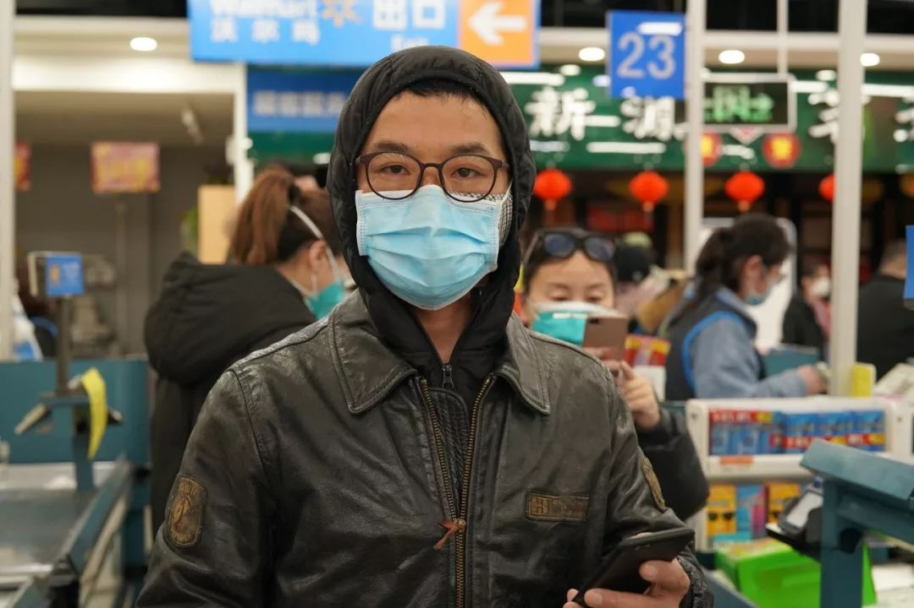
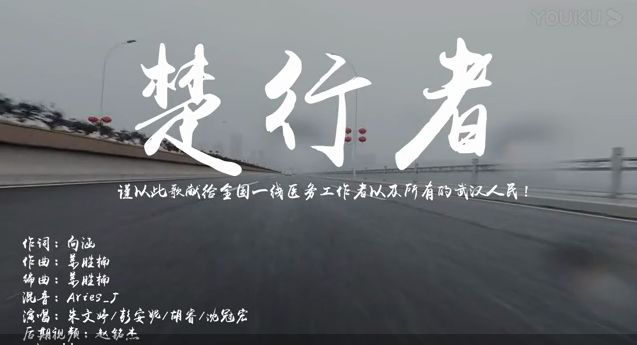
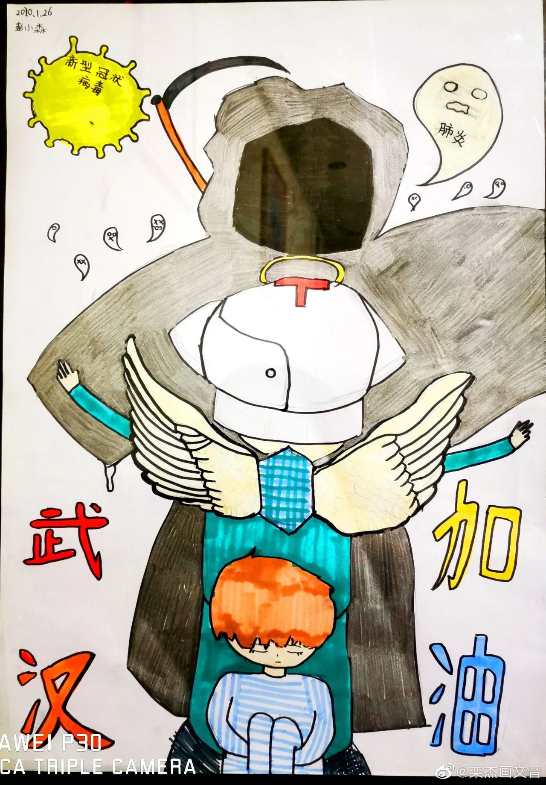

7位湖北人自述：我的“流浪”春节
原文链接 备份链接 《战疫口述记》，是燃财经在新型冠状病毒肺炎期间推出的特别栏目，记录疫情亲历者的观察和感受。本文为第3篇，查看前2篇请点击《农村这样防肺炎》《我在武汉战肺炎》。 作者 | 苏琦 金玙璠 孟亚娜 唐亚华 孔明明 魏佳 …
开启更有意思的武汉！请点击上方优良better →点击右上角“…” → “设为星标 ”

在这个春节，“隔离”替代“团聚”成了主题。
1月23日，上午10时，武汉开始“封城”。交通的阻断，出行的限制，让远在外地的武汉伢回不来，还在武汉的外地人走不了。医护人员在前线，我们只能在电视、手机屏幕前，感慨他们的不易。
人与人、人与城、城与城开始隔离后，武汉陷入从未有过的空旷和安静。“楼间喊话”“同唱国歌”“共点星光”……隔离中，我们不断为打破“隔离”而努力。当春节假期被延长，这场“隔离”还将延续。
难道，我们就只能坐以待毙，让自己和这座城市长久“隔离”？我开始思考：有什么方法能让在家中的我们和武汉连接在一起？
昨晚，我在一场叫做“隔离”的线上艺术计划中，找到了问题的答案。

点击跳转，查看艺术计划详情
在这场由合美术馆发起的线上艺术计划里，我看到的都是，人和城市从未被隔离的证据。
（以下作品由发起方搜集，仅作样例示范）

最好的相机，是人的眼睛。
在这段特殊时期里，我们看到的每一幕都将成为一个历史时刻。灾难把过往的平常，变得无常。每一个快门按下时的武汉，都是独一无二。


来源：艺术家 柯明

1月23日，“封城”第一天，up主林晨同学从楚河汉街“起飞”，在超市“降落”，将“空城”武汉传遍全国。1月24日，“封城”第二天，摄影师杨柯带着口罩在静得出奇的武汉三镇穿行，记录。1月29日，他们的视频素材，出现在人民日报发布的《武汉加油》MV中，引得全国人民都来给武汉鼓励。
个人的记录、集体的创作，宏大的、微小的，都是此时的武汉经历的。
《摄影师镜头下的今日武汉》 麦克视频&摄影师 杨柯
来源：哔哩哔哩 UP主：林晨同学
来源：腾讯视频 人民日报
“生傲骨，不认输，抗病毒，定胜出！踏疆土，肩重负，武汉有我们守护！”
为全国一线医务工作者和所有武汉人民写得这首歌，制作者们全程隔离“云创作”，在 26小时完成。
情绪到了，旋律和歌词，也就顺理成章了。

武音校友原创超燃“战疫”歌曲
向涵 姜胜楠 朱文婷——《楚行者》
创意，让我们的想法变得更有力。
一张海报，书本大小，有时却比万字文章更能振奋人心。“我们共同承担伤痛”“你不是独自在战斗”……把对这座城市的情意和鼓励，放在一张图里，传递出去。
来源：湖北美术学院
作者：RINDO润德

《你们不是独自在战斗》
来源：中国美术学院团委 作者：李昊旭

三行情书、五言绝句、七言律诗……千字征文。都是你安放情绪的方式，为你所用。是华丽词藻，是平铺直叙，都没关系，只要文字能够表达你的心意。
拿笔记下这段“隔离”，是为了以后和这座城走得更紧。
《”爸，我还回家过年吗？”》
来源：公众号 微湖美
书法总有一种魔力，可以在寥寥数笔之间，述尽衷肠。笔迹，也因倾注的心力不同，各有特点。
提笔写下你对武汉的祝福，鼓励，又或者只是一段简单的记录，让你对这座城市的情感来主导笔画的走向。
“共克时艰”“武汉加油”“平安”……绞转与提按间，完成和这座城市的切切私语。

湖北美术馆艺术总监
艺术家傅中望先生为疫情所写

合美术馆执行馆长鲁虹
在疫情期间书写
武汉美术馆张文博
在疫情期间所写
孩子或许不能像大人一样，在一次疫情中看到人性、看清现实。但他们知道，自然可敬生命可畏。
一支画笔和一张画纸构成的表达，有无限种。

作者：黄玺月 6岁
视心弦美术工作室提供

作者：彭小淼 11岁
视心弦美术工作室提供
作者：付恺祎 12岁
视心弦美术工作室提供
… …
除上述列举的形式以外，
如由其他形式作品，也欢迎投稿。
我们不会隔离任何一种表达。

text | 家乐福海盗
photo&video | 合美术馆提供
新朋友长按下方二维码
添加”better桑”
老朋友可直接勾搭better君、better酱

加better桑为好友
💬
# 你有想记录下来的“隔离”吗？#
点击文末右下角留言
-
END
· 推荐阅读 ·
原文链接 备份链接 《战疫口述记》，是燃财经在新型冠状病毒肺炎期间推出的特别栏目，记录疫情亲历者的观察和感受。本文为第3篇，查看前2篇请点击《农村这样防肺炎》《我在武汉战肺炎》。 作者 | 苏琦 金玙璠 孟亚娜 唐亚华 孔明明 魏佳 …
原文链接 备份链接 *************▲************* 四川省巴中市巴州区，一辆鄂A车牌（武汉）轿车的车窗上，贴着红岩社区加盖公章的证明，称车主无感冒发烧现象，且正在家自行隔离。 （杜茂林/图） 全文共*4201*字， …
原文链接 备份链接 据相关数据统计，春节前，有近500万人离开武汉，他们中有近30%的人离开湖北，他们或出差、或进行计划许久的旅行，或回家过年，但伴随着疫情的加剧，他们成了一群「不被欢迎的人」。 一位武汉的小学老师已经连续三年去厦门过年， …
原文链接 备份链接 这段时间，除了关于疫情本身的讨论，一些新的话题不断加入。单读征文今天的来信，来自一位选择离开家乡的武汉人。武汉人在外省的处境令人堪忧，从直面病毒的恐慌，到遭遇歧视的愤懑，武汉人不仅是这场疫情中最直接的受害者，还成为后续 …
原文链接 备份链接 本文故事来自一名化名为“平安”的武汉大学生，记述了她从返乡、封城，再到过年所经历的种种。这个特殊的春节，焦虑与希望同在，寂静与喧嚣并存。身处「风暴中心」，从慌乱到乐观，她的心理发生了什么样的变化？让我们一起来看看她过去 …